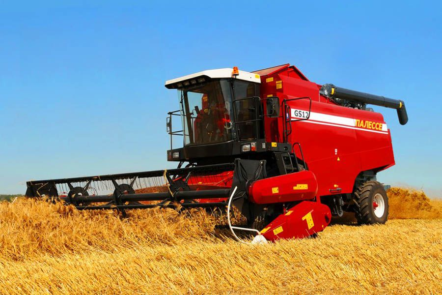

Антикорозійний захист металу - це головний напрямок компанії Lankwitzer Lackfabrik. Наша компанія володіє дуже великим досвідом у вирішенні складних завдань клієнтів з довготривалого захисту від корозії практично будь-яких виробів. Антикорозійний захист трубопроводів, сплавів, металоконструкцій, резервуарів, будівельних конструкцій, обладнання, труб - це ті завдання, які компанія успішно вирішує в Україні та в усьому світі протягом десятиліть.
Промислові лакофарбові покриття успішно застосовуються при виробництві рейкового рухомого складу (пасажирські вагони, вантажні вагони всіх типів, вагони метро, електровози, тепловози), автобусів, автомобільних причепів, автомобільних комплектуючих і устаткування для будівельної та сільськогосподарської техніки, а також для верстатів і промислових товарів . В числі наших клієнтів провідні промислові підприємства в світі : Komatsu, ZF Friedrichshafen, Bosch, BMW Siemens, Bombardier, Mannesmann, CLAAS.
